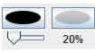

A fourteen colors palette is available on the right pane of the software.
Under this palette lays an oval button for a personalized choice of the active color  .
.
This button color is the active color for future objects created.
This is also the color that will be given to an object when clicked through palette tool  .
.
Since version 2.0, MathGraph32 allows the use of transparency for the filling of surfaces.
The opacity coefficient is set by moving the slider under the oval color choice button 
This coefficient is memorized in the file when the figure is saved.
A second color button shows what will be the real color used.
This transparency effect is only used for the choice of style  in the filling style choice palette.
in the filling style choice palette.
The filling style without transparency is symbolized by  .
.
The other filling styles (hatching) don't use any transparency effect.
When figures created with version earlier than 2.0, the default opacity coefficient.
This coefficient may be changed.
Created with the Personal Edition of HelpNDoc: Easy to use tool to create HTML Help files and Help web sites